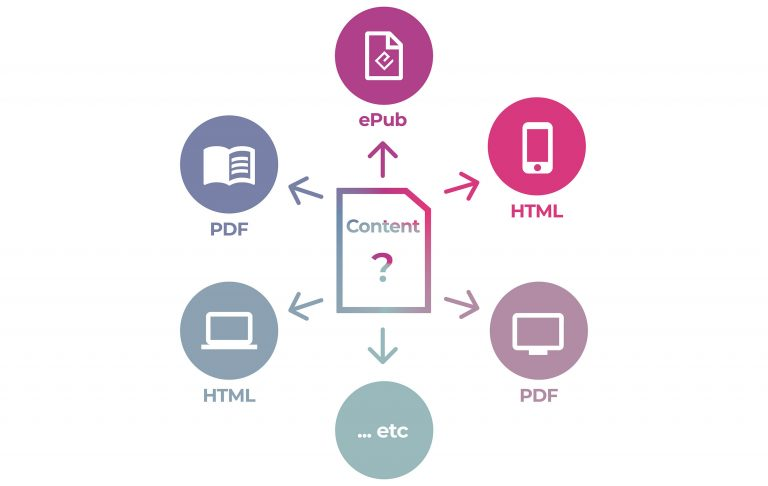
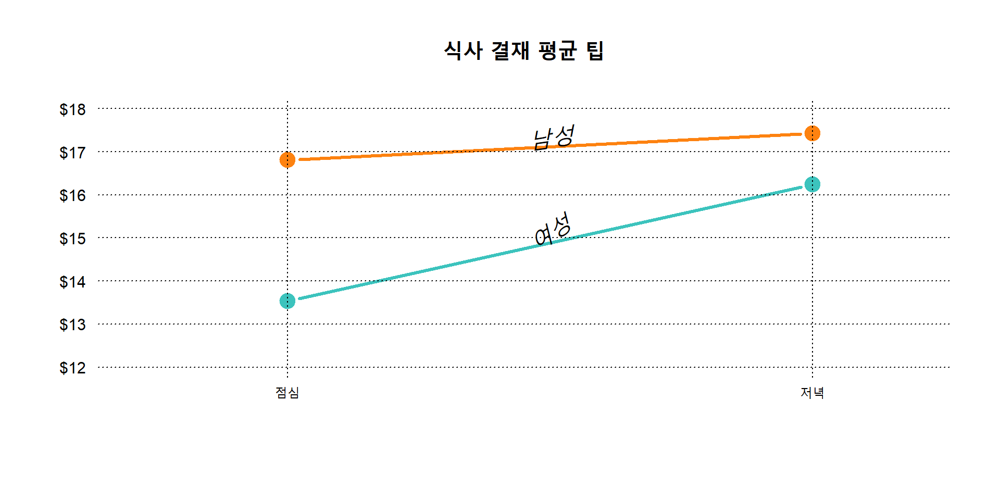

데이터 사이언스와 디자인
디자인과 아키텍쳐의 중요성
이광춘, 한국 R 사용자회
2022-10-11


데이터 사이언스


데이터 과학 욕구단계설


데이터 사이언스 - 출판



복잡성


시각화 - 그래프 문법 1
R 코드
bill_df %>%
ggplot(aes(x=time, y=total_bill, group=sex, shape=sex, colour=sex)) +
geom_line(aes(linetype=sex), size=1) +
geom_point(size=3, fill="white") +
expand_limits(y=0) +
scale_colour_hue(name="결재자 성별", l=30) +
scale_shape_manual(name="결재자 성별", values=c(22,21)) +
scale_linetype_discrete(name="결재자 성별") +
xlab("점심, 석식") + ylab("팁(Tip)") +
ggtitle("식사 결재 평균 팁") +
theme_bw() +
theme(legend.position=c(.7, .4))실행결과

R 코드
bill_mat <- matrix( bill_df$total_bill,
nrow = 2,
byrow=TRUE,
dimnames = list(c("여성", "남성"), c("점심", "저녁"))
)
mf_col <- c("#3CC3BD", "#FD8210")
barplot(bill_mat, beside = TRUE, border=NA, col=mf_col)
legend("topleft", row.names(bill_mat), pch=15, col=mf_col)
par(cex=1.2, cex.axis=1.1)
matplot(bill_mat, type="b", lty=1, pch=19, col=mf_col,
cex=1.5, lwd=3, las=1, bty="n", xaxt="n",
xlim=c(0.7, 2.2), ylim=c(12,18), ylab="",
main="식사 결재 평균 팁", yaxt="n")
axis(2, at=axTicks(2), labels=sprintf("$%s", axTicks(2)),
las=1, cex.axis=0.8, col=NA, line = -0.5)
grid(NA, NULL, lty=3, lwd=1, col="#000000")
abline(v=c(1,2), lty=3, lwd=1, col="#000000")
mtext("점심", side=1, at=1)
mtext("저녁", side=1, at=2)
text(1.5, 17.3, "남성", srt=8, font=3)
text(1.5, 15.1, "여성", srt=33, font=3)실행결과

디자인 - 데이터

- WHO 결핵 원데이터
- WHO 에서 년도별, 국가별, 연령별, 성별, 진단방법별 결핵 발병사례 조사 통계 데이터
- 진단방법
-
relstands for cases of relapse -
epstands for cases of extrapulmonary TB -
snstands for cases of pulmonary TB that could not be diagnosed by a pulmonary smear (smear negative) -
spstands for cases of pulmonary TB that could be diagnosed by a pulmonary smear (smear positive)
-
- 연령
- 014 = 0 – 14 years old
- 1524 = 15 – 24 years old
- 2534 = 25 – 34 years old
- 3544 = 35 – 44 years old
- 4554 = 45 – 54 years old
- 5564 = 55 – 64 years old
- 65 = 65 or older
- 성별
- males (m)
- females (f)
# A tibble: 7,240 × 60
country iso2 iso3 year new_s…¹ new_s…² new_s…³ new_s…⁴ new_s…⁵ new_s…⁶
<chr> <chr> <chr> <int> <int> <int> <int> <int> <int> <int>
1 Afghanistan AF AFG 1980 NA NA NA NA NA NA
2 Afghanistan AF AFG 1981 NA NA NA NA NA NA
3 Afghanistan AF AFG 1982 NA NA NA NA NA NA
4 Afghanistan AF AFG 1983 NA NA NA NA NA NA
5 Afghanistan AF AFG 1984 NA NA NA NA NA NA
6 Afghanistan AF AFG 1985 NA NA NA NA NA NA
7 Afghanistan AF AFG 1986 NA NA NA NA NA NA
8 Afghanistan AF AFG 1987 NA NA NA NA NA NA
9 Afghanistan AF AFG 1988 NA NA NA NA NA NA
10 Afghanistan AF AFG 1989 NA NA NA NA NA NA
# … with 7,230 more rows, 50 more variables: new_sp_m65 <int>,
# new_sp_f014 <int>, new_sp_f1524 <int>, new_sp_f2534 <int>,
# new_sp_f3544 <int>, new_sp_f4554 <int>, new_sp_f5564 <int>,
# new_sp_f65 <int>, new_sn_m014 <int>, new_sn_m1524 <int>,
# new_sn_m2534 <int>, new_sn_m3544 <int>, new_sn_m4554 <int>,
# new_sn_m5564 <int>, new_sn_m65 <int>, new_sn_f014 <int>,
# new_sn_f1524 <int>, new_sn_f2534 <int>, new_sn_f3544 <int>, …who %>%
pivot_longer(
cols = new_sp_m014:newrel_f65,
names_to = "key",
values_to = "cases",
values_drop_na = TRUE
) %>%
mutate(
key = stringr::str_replace(key, "newrel", "new_rel")
) %>%
separate(key, c("new", "var", "sexage")) %>%
select(-new, -iso2, -iso3) %>%
separate(sexage, c("sex", "age"), sep = 1)# A tibble: 76,046 × 6
country year var sex age cases
<chr> <int> <chr> <chr> <chr> <int>
1 Afghanistan 1997 sp m 014 0
2 Afghanistan 1997 sp m 1524 10
3 Afghanistan 1997 sp m 2534 6
4 Afghanistan 1997 sp m 3544 3
5 Afghanistan 1997 sp m 4554 5
6 Afghanistan 1997 sp m 5564 2
7 Afghanistan 1997 sp m 65 0
8 Afghanistan 1997 sp f 014 5
9 Afghanistan 1997 sp f 1524 38
10 Afghanistan 1997 sp f 2534 36
# … with 76,036 more rows